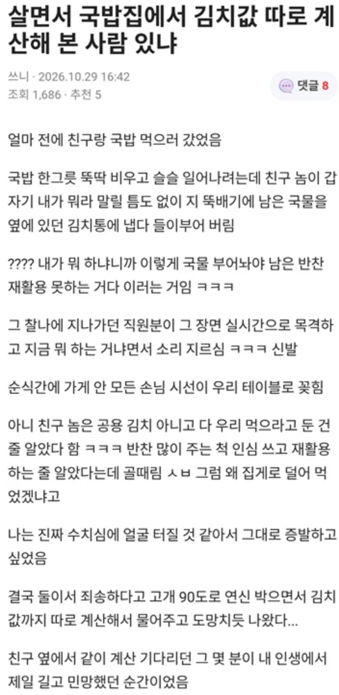

국밥집에서 김치값 따로 계산해 본 적 있냐?
댓글
ㄹㅇ 저능아인가 병신새끼 개빡치네
뭐 어떻게 커야 저런 사고방식이 생기냐 ㅋㅋ
몇년 전에 본 짤인데 날짜가 최근으로 되어있네 머지
추차차 추추차
저딴새끼는 손절 쳐야지.
난 음식 남기는 거 싫어해서 반찬 먹을 만큼만 딱 더는 버릇 있음
괜히 같이 밥 먹을 때 챙겨준다고 반찬 너무 많이 가져오면 다 먹어야 하는 사명감이 생김
나도 음식 남기는거 싫어해서
걍 주는거 다 먹음
나도 그럼.
그래서 구내식당 같은 곳에서 뻔히 아니다 싶을 정도로 반찬 많이 담아 가면 욕 나오고,
퇴식구에 뻔히 아니다 싶을 정도로 많이 남겼으면 욕 나옴.
직장 상사 밥 한숟갈남았는데 김치 부족하다고 갑자기 처음 퍼왔을때보다 더 많이퍼오면 존나 당황스럽긴하더라 ㅋㅋ
저러는거 몇번봤는데 주접떠는거같아서 별로더라
일단 친구놈 인성이 좆같은 새끼임
가게에서 재활용하는건 당연 안되지만 그걸 방지하겠다고 지가 먹던걸 붓는 마인드가 애초에
평소에도 진짜 본인 쪼금손해보는 일 생기면
존나 승질내고 지랄하는 새끼인거임
그 있잖음. 한톨도 손해 안보려는 사람
딱 그새끼임
남잘되는 꼴 못보고 그런부류
가게 재활용은 지가 신경쓸건 아니지.
알아서 하겠지 하면서 지먹은거 잘처리하면되지
인성자체가 걸렁뱅이새끼임
멍청한데 행동력 마저 좋은 타입 ㅋㅋㅋㅋ
숙소가서 쓰지도 않을 물 존나 틀어놓는 새끼
휴지 존나 풀어놓고 쓰지도 않고 버리는 새끼
노래방가서 1분 남았을때 부르지도 않을거면서 제일 긴 노래 틀어놓고 나오는 새끼
무한리필집가서 쳐먹지도 않을거면서 존나 담아와놓고 다 남기고가는 새끼들 있음
돈 낸거에서 하위 30%는 되는듯
가만히 있으면 중간은 간다 ㄹㅇ
저걸 행동으로 안하고 말로만 하는 친구는 양반이란걸 배웠습니다
빡대가리가 어디서 괜찮아보이는거 주워듣고 보이는 패턴임
아무 잘못도 저지르지 않은 주변인들에게 패악질 부리는것 뿐인데
본인이 옳은일 한다고 생각하는거
의도한건 아니겠지만 아줌마 대응이 존나 지리네 현장에서 바로 광역 어그로 끌어서 이긴거지
저런 깨시민 새끼들이랑 논리 싸움 해서 좋을게 없음
ㅅㅂ
덜어먹으라고 따로 김치통 놔주는곳을 안가봐서 그런게 있는줄 몰랐다
궁금해서 검색해보니 뚜껑도 따로 없는 사진이 있는거에 비해 많던데
침이든 튀는 국물이든 뭐든 김치안에 들어가는거 아니냐? 비위생적이네
뚜껑을 열어놓고찍은거 아닐까
그럴수있겠다 내가 생각이 짧았군
국밥집에 테이블마다 있는 공용 김치통에 뚜껑 없는 곳은 아직 한 번도 못봄 보통 다 있을거임
그렇게 따지면 김치통보다 대부분의 뷔페가 훨씬 더 비위생적임
뺨을 돌리고 싶네 뷔페가면 어찌할랑가
가끔 혼자 눈돌아가서 냅다 들이박는 애들이 실제로 있늠
문제의 본질이라도 이해를 제대로 했다면
이해라도 가는데
여기서 이걸? 그런 생각이 들어?
하는 애들이 실제로 있어 ㅋㅋㅋㅋㅋ
현생에나 정치에나 커뮤에나 그런 애들이 이건 너무 하지 않냐고 말하는거 보면
그저 떼법아긴함
행동하는 멍청함 진짜 골때려
다른소리인데
그냥 김치좀 이제 돈받고 팔고 대기업 국산김치 먹었음 좋겠음
멍청한데 부지런한 놈이라 조직 생활에서 반드시 제거해야 할 최악의 유형임.
저건 부지런한게 아니라 악독한거임
멍청한데 악독해서 자기한테 뭐가 이득이 될지도 모르고 남 괴롭히는 새끼지
저정도면 지능에 실제로 문제가 있는거 같은데
이젠 직원이 본 걸로 바꿔서 나오네 ㅋㅋ
사실이면 싸게 거를수 있는데 아직도 친구하고 있을까?
자기가 현명한 소비자라 생각하는 거지네
'지구는 사실 평평하다'
'이스라엘은 한민족과 유전자를 공유한다'
이따위 병신같은 소릴 사실로 믿을 확률도 높겠어 ㅋㅋ
근데 저런곳에서 한 두번 먹은것도 아닐텐데 저게 말이 되나
커뮤로 인생공부했나 ㅋㅋㅋ
저 사건을 계기로 손절하는것도 좋은 기회가 되겠네
셀프 반찬코너에 잔반 덮어 버린거나 마찬가지네